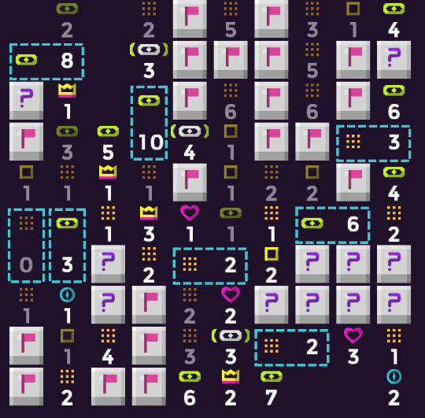

Above picture shows off a lot of hint-types.
The crown tells you the biggest unbroken sequence that it can see.
The 'eyebracket' reports how many unbroken sequences that it sees.
The heart sees only 'lonely mines', mines that have 0 neighbor mines in the 4 cardinal directions.
The blue rectange merges 2 tiles into 1 big tile.
The blue compass tells you how many directions it sees mines in.